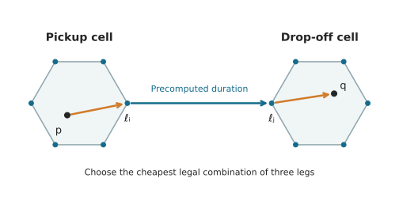
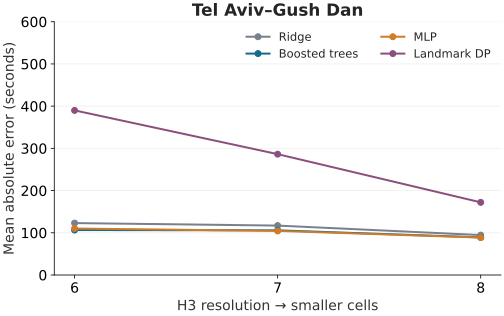
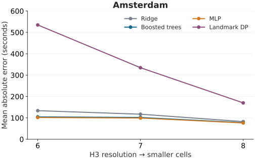
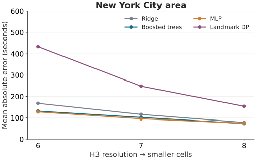
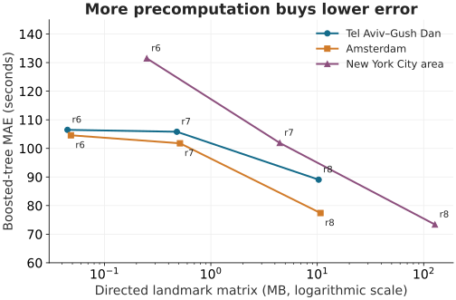

Routing · Machine learning · An experiment
From Hexagons to Driving Times
How much road-network detail do we need to estimate a drive?
A shortest-path query answers a precise question: how long does it take to drive from this pickup to this drop-off? But many planning problems ask that question thousands of times, for pairs that keep changing. It is tempting to do some of the work in advance.
The difficulty is deciding what to store. A table between every possible pair of coordinates is impossible. A table between a small set of representative locations is manageable, but it loses detail. Can a model recover enough of that detail to produce useful estimates?
I tested a simple idea: divide a city into H3 hexagons, place landmarks near their vertices, and precompute driving durations between landmarks. Then compare a route assembled through those landmarks with three models that predict duration directly. The experiment covers Tel Aviv–Gush Dan, Amsterdam, and the New York City area, with each city trained independently.
The result: at the finest tested resolution, ML achieved mean absolute errors of roughly 73–89 seconds. Even the coarsest grid produced errors around 102–131 seconds with the better-performing models. Finer grids helped, but their landmark tables were about 220–510 times larger. The route-based method was less accurate on average, with a useful additional property: it gives an upper bound under the static routing model.
Code, protocol, result tables, and figure generation are on GitHub.
A small representation of a large road network
H3 assigns geographic coordinates to cells at different resolutions. Higher resolutions mean smaller cells. I used resolutions 6, 7, and 8; their global average hexagon areas are approximately 36.1, 5.16, and 0.737 km². Individual cells vary in size. See the H3 resolution table.
For each cell, its six vertices suggest six representative places. A geometric vertex might fall in a building or a canal, so it must be snapped onto the road network. In this experiment, a landmark is the nearest eligible road position with one fixed legal driving direction. It can sit partway along a road segment; it is not necessarily an intersection. Shared vertices and identical snapped directed positions are deduplicated.
Direction matters. A road position approached from the north is not always interchangeable with the same position approached from the south. Treating them as identical can accidentally join two individually valid route segments into an invalid journey.
For every ordered pair of landmarks, I store the shortest driving duration. The matrix is directed: driving from A to B can take a different amount of time from driving from B to A. With L unique landmarks, a dense float32 table takes 4L² bytes. This implementation stores the complete matrix, including diagonal and within-cell entries.
The grid coverage follows road geometry sampled every 100 metres, plus a one-cell ring. It covers the study region before trip sampling is evaluated; it is not built only around the test pickups.
An approximation you can drive
Suppose pickup p and drop-off q belong to different cells. Let ℓᵢ be one of the pickup cell’s landmarks and ℓⱼ one of the drop-off cell’s landmarks. A candidate journey has three legs:
- Drive from the pickup to ℓᵢ.
- Use the stored duration from ℓᵢ to ℓⱼ.
- Drive from ℓⱼ to the drop-off.
{kind=link}

Choose the cheapest combination out of the six-by-six landmark choices:
This is a small dynamic program over three layers. We can minimize over the destination landmarks for each origin landmark, then take the minimum over origins. With only 36 combinations, a direct array minimum is sufficient. There is no need to run another general shortest-path algorithm over these layers.
The middle leg is a lookup. The first and last legs still require exact routing at query time. A straightforward implementation can use plain Dijkstra with one source and multiple targets on a routing graph that represents legal driving movements:
- Run Dijkstra from the pickup, targeting all of its cell’s landmarks.
- Run Dijkstra from the drop-off on the reversed directed graph, targeting all of its cell’s landmarks. These distances give the required landmark-to-drop-off durations in the original graph.
Each search can stop when every target landmark has been settled (its shortest distance finalized), or when the search queue is empty. This gives the endpoint legs with two single-source, multi-target searches.
In this experiment, those legs are computed through two local OSRM table requests using its Contraction Hierarchies routing engine. Plain Dijkstra is an alternative implementation of the same shortest-path calculations, not the engine used for the reported timings. The searches are not restricted to the endpoint cells. DP therefore retains an online routing dependency.
Why pessimism can be valuable
Every feasible combination describes a legal journey. The shortest possible journey cannot be longer than one of those journeys. Therefore, with compatible directed landmark states and the same routing costs, T̂(p, q) ≥ d(p, q). Taking the best landmark combination preserves the upper bound.
This is a useful kind of pessimism. If underestimating duration is much worse than overestimating it—for example, when a planner must protect a hard pickup deadline—a conservative estimate can be preferable to one with lower average error.
The guarantee is about the routing model. It does not guarantee arrival on time in the real world: traffic, uncertain speeds, and service delays are outside this experiment. Floating-point storage and OSRM’s rounded durations also require a small numerical tolerance when checking the bound.
Let the model estimate the missing detail
The ML alternative uses the landmark table as information about the road network, then predicts the entire trip duration directly. It does not calculate the exact pickup-to-landmark or landmark-to-drop-off durations.
Each example has 63 base features:
- 36 driving durations: every directed combination from the pickup cell’s six landmarks to the drop-off cell’s six landmarks.
- 24 local offsets: east and north displacement between each endpoint and each of its six snapped landmarks.
- 3 trip geometry features: pickup-to-drop-off east displacement, north displacement, and straight-line distance.
The duration block describes how the network connects the two areas. The offsets describe where the actual endpoints sit relative to those representative locations. The models receive neither absolute coordinates nor exact endpoint-leg durations.
I kept the model comparison deliberately small:
- Ridge regression: a regularized linear baseline. It asks how much we can achieve by combining these features with a weighted sum.
- Gradient-boosted trees: histogram gradient boosting, which can learn nonlinear thresholds and feature interactions.
- A small neural network: an MLP with hidden layers of 128 and 64 units, giving a different way to learn nonlinear relationships.
There are two predefined hyperparameter candidates per model family, selected by validation MAE. MLP epoch selection also uses validation data. Missing durations are imputed, with missingness flags; preprocessing and target scaling are fitted only on training data. Predictions are clipped at zero. Each city and resolution gets its own fitted models.
This is a comparison of three practical model families, not an exhaustive search for the best possible predictor. The exact settings are in the frozen protocol.
What exactly did we test?
Ground truth is shortest driving duration on OpenStreetMap roads using a pinned OSRM 5.27.1 car profile configured to minimize duration. Traffic is ignored. These are router labels, not durations measured from actual vehicle trips. The map requests use the historical timestamp September 17, 2026.
Each study region is an explicit rectangle with a 0.12-degree routing buffer. The NYC rectangle includes nearby urban roads outside the city boundary. The buffer allows routes to leave the endpoint region, although sufficiently long detours can still be cut off.
For each city, I sample 3,000 endpoint locations approximately in proportion to eligible road-segment length. A position is drawn within the middle 90% of a selected segment and snapped within 100 metres. This gives broad road coverage; it does not reproduce the spatial distribution of ride requests.
The endpoints are split into three disjoint pools: 2,250 for training, 375 for validation, and 375 for testing. Unique directed pairs are sampled within each pool. A→B and B→A are different examples. No endpoint is shared across the three splits, although an endpoint can occur in multiple pairs within its own split.
A pair is accepted only if its endpoints belong to different cells at all three tested resolutions. This keeps the same pairs across resolutions and methods. It also means this experiment excludes many short trips and says nothing about same-cell accuracy. A practical same-cell routing fallback is possible, but it is not evaluated here.
The requested split sizes are 12,000 training pairs, 2,000 validation pairs, and 2,000 test pairs. After excluding unreachable or zero-duration labels, the test sets contain 1,962 trips in Tel Aviv, 1,962 in Amsterdam, and 1,983 in NYC. Every method returns a finite estimate for every retained test pair.
The main metric is mean absolute error (MAE), in seconds. I also record the 95th percentile of absolute error and signed bias, defined as prediction minus ground truth. The experiment uses one fixed seed and split. Small differences between models should not be read as statistically established wins.
Smaller cells help. Large cells still carry information.
In all three cities, increasing the H3 resolution improves every method’s MAE. The ML models consistently have lower average error than the landmark DP route.
{kind=link}

{kind=link}

{kind=link}

The coarsest grid is already useful on this benchmark: boosted trees achieve about 106 seconds MAE in Tel Aviv, 105 in Amsterdam, and 131 in NYC. Those estimates use duration matrices of only about 45 KB, 48 KB, and 250 KB, respectively. Model checkpoints and other runtime data add to that storage.
At resolution 8, boosted trees and the MLP are close. The MLP has slightly lower MAE in Tel Aviv and Amsterdam; boosted trees have slightly lower MAE in NYC. There is no compelling universal winner between them in this single run. Ridge is also surprisingly competitive at the finer resolution, suggesting that this representation makes a simple model worth keeping as a baseline.
Average error does not describe the whole experience. Here are the resolution-8 boosted-tree results alongside DP:
| City | Method | MAE | 95th percentile | Bias |
|---|---|---|---|---|
| Tel Aviv | Boosted trees | 89.1 | 264.4 | -7.0 |
| Tel Aviv | DP | 172.1 | 467.2 | +172.1 |
| Amsterdam | Boosted trees | 77.4 | 201.8 | -8.4 |
| Amsterdam | DP | 170.1 | 411.2 | +170.1 |
| NYC | Boosted trees | 73.4 | 209.6 | -4.7 |
| NYC | DP | 154.1 | 330.1 | +154.1 |
For boosted trees, the 95th-percentile absolute error is roughly 3.4–4.4 minutes. A near-zero mean bias would not imply that underestimation is rare; positive and negative errors can cancel. DP’s positive bias, by contrast, is almost identical to its MAE because its error is one-sided, apart from numerical rounding. Its conservatism comes with a substantial accuracy cost.
What does the extra accuracy cost?
A finer grid creates more landmarks, and the all-pairs table grows quadratically in their number. The numbers below are the actual matrix payload, in decimal MB; they exclude the road graph, landmark metadata, and trained models.
| City | H3 | Landmarks | Matrix MB | Matrix time |
|---|---|---|---|---|
| Tel Aviv | 6 | 106 | 0.045 | 0.07 s |
| Tel Aviv | 7 | 346 | 0.479 | 0.51 s |
| Tel Aviv | 8 | 1,605 | 10.304 | 9.78 s |
| Amsterdam | 6 | 110 | 0.048 | 0.06 s |
| Amsterdam | 7 | 358 | 0.513 | 0.49 s |
| Amsterdam | 8 | 1,637 | 10.719 | 9.34 s |
| NYC | 6 | 250 | 0.250 | 0.59 s |
| NYC | 7 | 1,054 | 4.444 | 10.00 s |
| NYC | 8 | 5,646 | 127.509 | 268.90 s |
In NYC, moving from resolution 6 to 8 increases the matrix from 0.25 MB to 127.5 MB—about 510 times larger. Boosted-tree MAE falls from 131.5 to 73.4 seconds, a reduction of about 44%. Tel Aviv and Amsterdam show the same direction of tradeoff, with smaller accuracy gains and smaller absolute tables.
{kind=link}

Resolution 7 is a plausible compromise if a few megabytes of table storage are acceptable. But there is no single best grid size without an error budget and a storage budget. In Amsterdam, for example, resolution 6 to 7 improves boosted-tree MAE by only about three seconds; resolution 8 produces the larger improvement.
The full run used one CPU and 2 GiB of RAM, without a GPU. Mean individual-query times were roughly 0.7–0.9 ms for ridge and the MLP, 2.5–2.6 ms for boosted trees, and 4.0–6.9 ms for DP. ML timings include feature construction and inference; DP timings include its two local HTTP table calls. Common endpoint snapping is excluded. These are measurements of this implementation, not a claim about pure algorithm speed or a speedup over an optimized batched router.
What I take from this experiment
Which model and resolution would I pick?
My default from these results is the MLP at H3 resolution 8, if its landmark table fits the memory budget. Resolution 8 gave the lowest MAE for every method in every city. The MLP achieved 88.6 seconds MAE in Tel Aviv, 76.2 in Amsterdam, and 74.3 in NYC. It narrowly beat boosted trees in the first two cities and narrowly trailed them in NYC, while having lower measured individual-query latency. The accuracy gaps are too small for this single split to establish a reliable model winner; boosted trees at resolution 8 are an equally credible choice on accuracy.
When memory is tighter, I would start with resolution 7 and check whether its error is acceptable. Its landmark tables occupy about 0.48 MB in Tel Aviv, 0.51 MB in Amsterdam, and 4.44 MB in NYC, compared with 10.3, 10.7, and 127.5 MB at resolution 8. The resolution-7 MLP gives MAEs of 104.4, 99.1, and 95.8 seconds, respectively. These sizes cover the matrix payload only. Resolution 6 remains an option for a much smaller table; the useful cutoff depends on the application's error budget.
I would choose DP when the static upper-bound guarantee is a requirement. Its higher average error buys a different property: a conservative duration under the same routing model. That guarantee does not cover traffic or other real-world delays. These recommendations apply to the sampled cross-cell trips in this experiment.
The useful finding is that a fairly coarse landmark representation can support reasonable duration estimates on unseen endpoints within a city. Refining that representation improves accuracy, but the storage curve grows much faster than the error shrinks.
The choice between DP and ML also depends on the kind of error that matters. If the objective is low average error and avoiding online endpoint routing, the learned models are attractive. If an underestimate is unacceptable under the static model, the DP construction offers a property these regressors do not have. Optimizing MAE alone cannot give that guarantee.
There are clear limits to the evidence: one split, three independently trained cities, synthetic road-length sampling, cross-cell trips only, and static router labels. The experiment does not establish performance on real demand, traffic, unseen cities, or same-cell trips. It also has no geometry-only ablation, so it does not isolate how much improvement comes specifically from the landmark durations.
The next questions I would investigate follow directly from those limits: evaluate on a realistic trip distribution that includes short journeys; measure the incremental value of landmark durations against the same models using only geometry; and examine an asymmetric loss or quantile estimate when underprediction costs more than overprediction. A learned conservative estimate would still need calibration and would not inherit DP’s mathematical bound automatically.
Reproduce the figures or the experiment
The standalone repository contains the frozen protocol, core experiment code, Docker runner, tests, all 36 result summaries, and this article’s figure generator. The published core modules are byte-identical to those used in the completed full run; a manifest records their hashes. No private service or credentials are needed to run the experiment.
The full run passed the DP bound check on every retained test prediction and 450 additional checks comparing selected three-leg journeys with joined waypoint routes. The standalone test suite has 15 tests. These checks are particularly important for direction handling: a fast estimate is not useful if its claimed bound comes from incompatible route legs.
The small result summaries are included in Git. Full per-trip datasets, model files, maps, and landmark matrices are produced by the runner and are not bundled with this article. Reproducing the exact labels requires identical map bytes, not just the same timestamp; the runner records map identities and supports reuse of frozen extracts.
Map data © OpenStreetMap contributors, available under ODbL. Routing uses OSRM 5.27.1; models use scikit-learn 1.5.2. Protocol: duration_approximation_v6; seed: 20260918.